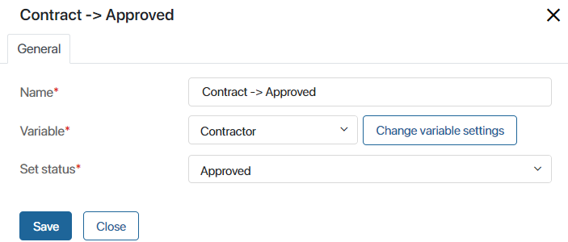

The Manage Status activity is used only in the business processes that involve apps with customized statuses. It allows you to track the process progress and also determines the status of one or several app items at a particular stage of the process.
For example, you can create an Contracts app and set up an associated business process for document approval. By setting up statuses, you can track at what stage of the document life-cycle an contract currently is. As the process progresses, the contract will automatically acquire different statuses: Approved, Signed, Rejected, etc, providing clear information on how the work is being done.
You can also use the block to change the status of several app items, for example, if a manager approves a number of similar agreements in a task.
Create statuses for the app
To customize a block, first define the statuses. You can do this in one of the following ways:
- In the app settings.
- In the graphic process designer on the Statuses tab.
начало внимание
The Statuses tab is only available in business processes associated with an app. In global company and workspace processes, this tab is unavailable.
конец внимание
Set up the Manage Status activity
- Open the process page and in the toolbar on the right, click the System Elements tab.
- Drag the Manage Status block onto the diagram and place it where you want to change the status.
- Double-click on the block in the diagram. In the window that opens, specify:
- Name*. Enter the name of the block to be displayed on the process diagram.
- Variable*. Specify the variable to which the items for status change are written.
If the process is associated with an app, the Variable field will already contain the context variable representing the app. To edit it, click Change variable settings. For example, in the window that opens, you can select the Many subtype when you are customizing a block to change the status of multiple items of the same app in bulk.
If the variable is not set in the process context, click Create new variable. - Set status*. Select a value to assign to the items from the variable, and click Save.
If you are setting up status change for the Deals app, an additional Reason for rejection field will appear if the Lost status is selected.
Changing statuses of two or more apps in one process
Sometimes you will use several apps in one process. The approval process mentioned above describes the stages of approving a contract. Contracts belong to the Order Management workspace, which may also store other apps, for instance, Customers, Orders, Claims. Each of these apps might have its own set of statuses.
When the contract’s status changes, it seems reasonable to change the contractor’s status, too. For example, once the contract is signed, the contractor’s status can change from Contract approval to Order fulfillment.
This way, both of these apps will be included in one process, and the statuses of both apps will change as the process progresses.
Here is how you can set this up:
- In process designer, go to the Context tab. Add a new variable to represent the Contractoror app.
- Place new Manage status elements where necessary, for instance, before and after the Sign the contract task.
- Double-click on the element to open its settings. In the Variable field, select Contractor. In the drop-down list select the required status and click Save.

Now you only have to decide how the Contractors variable added on step 1 shall be filled in.
You can place the variable on a task form. In this case, the employee performing this task will be asked to select a specific contractor on the task form.
Sometimes users specify the contractor directly in the contract when adding a new app item. In this case, the contractor’s details shall be sent from the Contracts app to the variable created in step 1. To do that, use the Assign value activity.
Found a typo? Select it and press Ctrl+Enter to send us feedback